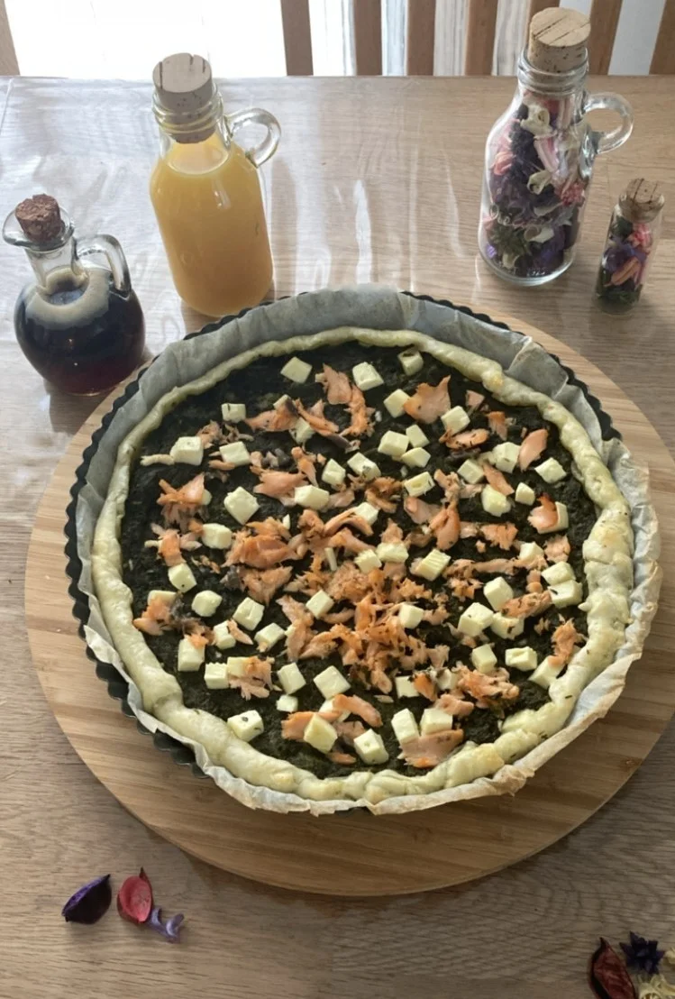

Սաղմոնով և Սպանախով Կարկանդակ
Նախապատրաստում 20 րոպե Պատրաստում 25 րոպե 4 անձի համար Հնարք
Շերտավոր խմոր, որը պատրաստվում է մի քանի րոպեում ՝սպանախի, սաղմոնի և ֆետայի համակցությամբ, ապահովում է բանջարեղենի և հաճույքի կատարյալ համադրություն:
Շերտավոր խմոր, որը պատրաստվում է մի քանի րոպեում ՝սպանախի, սաղմոնի և ֆետայի համակցությամբ, ապահովում է բանջարեղենի և հաճույքի կատարյալ համադրություն: